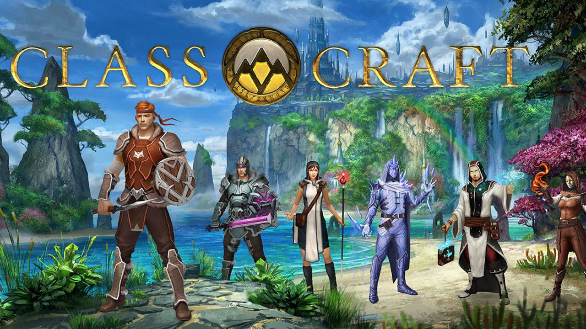
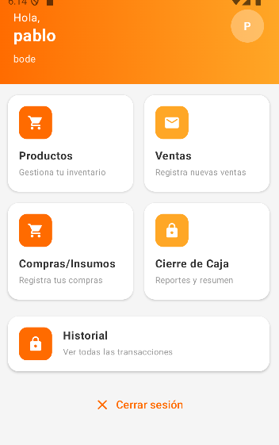
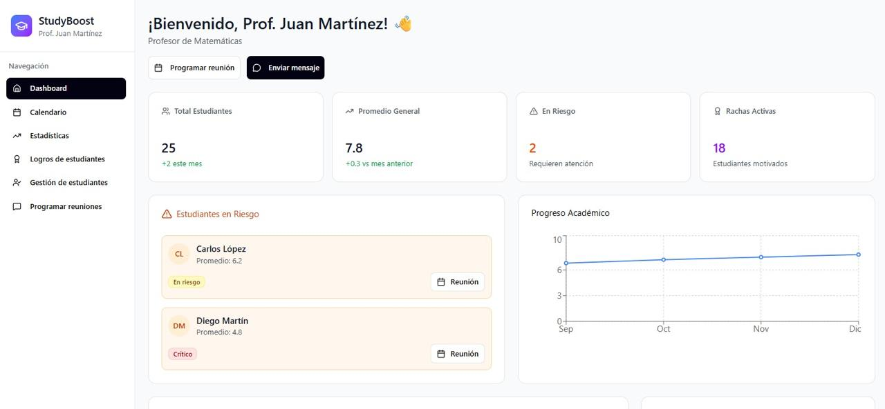

Estudiante de Tecsup de la carrera Diseño y Desarrollo de Software
Desarrollador de software con conocimientos en Kotlin, JavaScript, Node.js, PHP, Python y SQL, enfocado en la creación de aplicaciones móviles y sistemas web. Cuento con experiencia en desarrollo de soluciones tecnológicas y soporte técnico básico, incluyendo instalación y configuración de software. Me caracterizo por mi proactividad, responsabilidad y capacidad de trabajo en equipo, con una fuerte motivación por seguir creciendo profesionalmente y aportar soluciones innovadoras y funcionales.
Años de Estudio
Proyectos Académicos

Aplicación web inspirada en la gamificación educativa para mejorar la motivación estudiantil.
Ver más
Optimización del control de inventario y registro de ventas en tiempo real para negocios.
Ver más
Sistema con IA para gestión de usuarios y generación de horarios de estudio personalizados.
Ver másEstoy siempre abierto a nuevas oportunidades de aprendizaje y colaboración en proyectos interesantes. Si tienes alguna duda o propuesta, ¡no dudes en escribirme! Correo personal: ramosimananderson@gmail.com